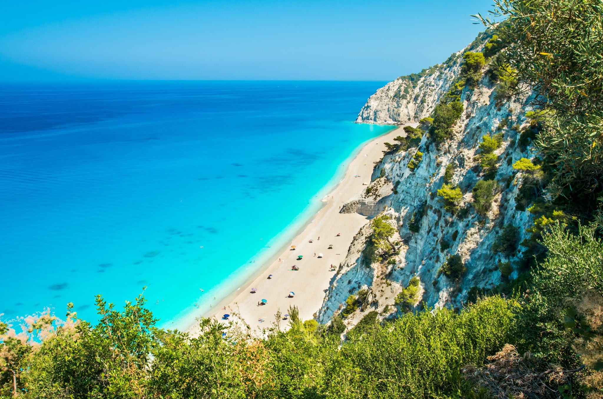
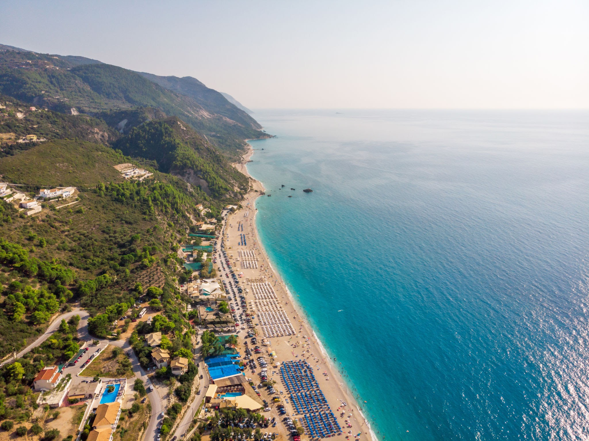
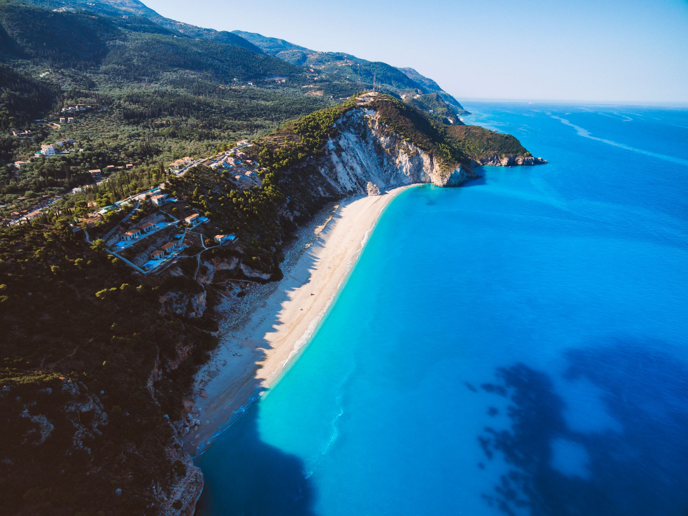
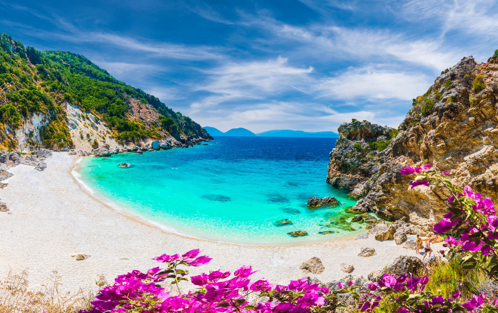

Πόρτο Κατσίκι

Το Πόρτο Κατσίκι, ο γραφικός όρμος με τα γαλαζοπράσινα νερά ανακυρήχθηκε το 2002 ως η δεύτερη καλύτερη παραλία του κόσμου, ενώ 2002-2003 το Υπουργείο Περιβάλλοντος την ανακήρυξε ως την καλύτερη παραλία της Ελλάδας. Το σκηνικό γνωστό και πολυφωτογραφηένο: μπροστά στα πανύψηλα βράχια απλώνεται μια στενή λωρίδα κατάλευκης άμμου πριν βουτήξουμε στα κρυστάλλινα και βαθυγάλανα νερά!
View on map
Εγκρεμνοί

Η απαράμηλη ομορφιά της παραλίας Εγρεμνοί στη Λευκάδα την κατέστησε ένα από τα πιο όμορφα και πολυδιαφημισμένα τοπία του κόσμου. Το νερό που περιβάλλει την παραλία είναι καθαρό, γαλαζοπράσινο και προσφέρει μία από τις καλύτερες συνθήκες για κολύμπι στην Ευρώπη. Η παραλία Εγκρεμνοί είναι επίσης μια από τις μεγαλύτερες παραλίες της Λευκάδας, με μήκος πάνω από 2,5 χιλιόμετρα. Όποιος αναζητά ειρήνη και χαλάρωση σε ένα γραφικό περιβάλλον, πιθανότατα δεν θα απογοητευτεί από αυτή την όμορφη περιοχή της Λευκάδας.
View on map
Κάθισμα

Τεράστια αμμουδερή παραλία στην δυτική Λευκάδα σε απόσταση 15 χλμ από την πόλη. Η πρόσβαση είναι αρκετά εύκολη διασχίζοντας μικρά χωριουδάκια και τον καταπράσινο δυτικό άξονα και ευχάριστη λόγω της πανοραμικής θέας. Τα μάτια σας θα έχουν ευφρανθεί από την υπέροχη διαδρομή πριν ακόμα φτάσετε και αντικρίσετε το Ιόνιο πέλαγος. Ο δρόμος που οδηγεί στην παραλία είναι ελικοειδής και στο τέλος του υπάρχει ένα αρκετά μεγάλο πάρκινγκ. Η έκπληξη στο Κάθισμα έγκειται στο γεγονός ότι οι λάτρεις του paragliding (αλεξίπτωτο πλαγιάς) μπορούν να απολαύσουν απίστευτη θέα πετώντας πάνω από την παραλία και τα τουρκουάζ νερά. Η παραλία περιβάλλεται από εντυπωσιακούς γκρεμούς. Η λεπτόκοκκη λευκή άμμος και τα σμαραγδένια νερά δίνουν την αίσθηση στον επισκέπτη ότι βρίσκεται σε έναν παραδεισένιο χώρο.
View on map
Άγιος Ιωάννης

Η παραλία του Άγιου Ιωάννη βρίσκεται σε απόσταση ανάσας από την πόλη και ανήκει στη Γύρα. Είναι τόσο κοντά που κάποιος μπορεί να κάνει ένα τέλειο διάλειμμα για να χαλαρώσει στη μοναδική θέα που προσφέρει το μέρος. Τα νερά έχουν γαλαζοπράσινο και τυρκουάζ χρώμα, που σε κάνουν να θες να μπεις στη θάλασσα χωρίς δισταγμό. Κάποιες φορές οι άνεμοι εδώ είναι λίγο έντονοι, γεγονός που ευνοεί φυσικά τους λάτρεις του surf. Στην παραλία υπάρχει και ναυαγοσώστης. Στην επάνω πλευρά του δρόμου θα βρείτε ταβερνάκια και καφετέριες για να ξαποστάσετε από τη ζέστη του καλοκαιριού και να απολαύσετε τον καφέ σας ατενίζοντας το Ιόνιο πέλαγος και τους επίδοξους σέρφερς στην προσπάθειά τους να δαμάσοουν τα νερά.
View on map
Μύλος

Η παραλία του Μύλου είναι μοναδική, μοιάζει να ναι ψεύτικη σαν την κοιτάς από μακρυά. Το μεγαλύτερο προτέρημα της είναι ότι είναι απομονωμένη και δεν κατακλύζεται από την ύπαρξη αυτοκινήτων. Η πρόσβαση στην παραλία μπορεί να γίνει με καραβάκι από τον Άγιο Νικήτα, όμως για τους πιο περιπετειώδεις τύπους υπάρχει και ένα στενό μονοπάτι που ξεκινάει μέσα από το χωριό και οδηγεί μέχρι εκεί. Η διαδρομή διαρκεί περίπου 15-20 λεπτά, όμως είναι πολύ ενδιαφέρουσα καθώς περπατάς για πολύ λίγο πάνω στο βράχο που στέκεται δίπλα στη θάλασσα, ανάμεσα σε θαμνώδες τοπίο. Μόλις φτάσετε στο τέλος του μονοπατιού, αντικρίζετε ένα φανταστικό τοπίο μπροστά σας. Λευκή άμμος και βαθιά τιρκουάζ νερά σε περιμένουν να τα απολαύσεις για πολλές ώρες.
View on map
Αγιοφύλλι

Το Αγιοφύλλι είναι μια από τις ομορφότερες παραλίες της Λευκάδας σε ένα πολύ όμορφο και γραφικό κόλπο στην ανατολική πλευρά του κόλπου της Βασιλικής. Η παραλία περικλείεται από βράχια που σε συνδυασμό με τα λευκά βότσαλα, από τα οποία καλύπτεται η ακτή, και τα κρυστάλλινα γαλαζοπράσινα νερά συνθέτουν ένα εξωτικό σκηνικό που θα σας μαγέψει. Αποτελεί επίσης ιδανικό προορισμό για τους λάτρεις του snorkeling μιας και θα διαπιστώσετε ότι θα κολυμπάτε σε απόσταση αναπνοής από διάφορα είδη ψαριών ενώ στο βόρειο άκρο της παραλίας υπάρχει ένας βράχος από όπου μπορείτε να κάνετε βουτιές.
View on map